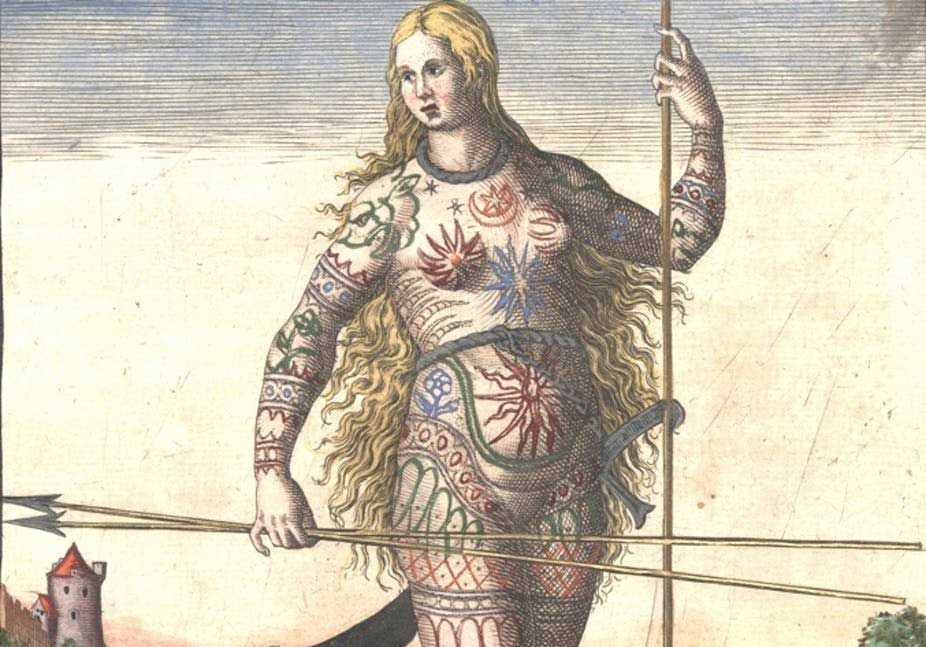

Rebeldia, personalidade, História. Essas podem ser uma das poucas palavras que podem definir o significado da tatuagem entre nós. No contexto da sociedade contemporânea, o individualismo induz muitas pessoas a fazerem de sua pele o local do registro de idéias, valores ou da simples vaidade. Um dos mais conhecidos registros que se tem sobre as tatuagens é do capitão inglês James Cook, quando o mesmo tentava entrar em contato com os nativos do Taiti. O povo daquela região designava o hábito de pintarem definitivamente a pele de “tatau”, por conta do barulho produzido pelos instrumentos utilizados na confecção de suas tatuagens. No entanto, não podemos dizer que eles foram os primeiros a desenvolverem esse tipo de hábito. O homem de Ötzi, com cerca de mais de 5300 anos, fazia inveja a qualquer aficcionado por tatuagens dos dias de hoje. Em seu corpo foram encontradas mais de cinqüenta tatuagens que, de acordo com alguns estudiosos, tinham significações religiosas. A prática da tatuagem também foi registrada entre os egípcios e os pictos, uma civilização antiga do Norte da Europa. No Brasil, diversas tribos indígenas traziam tatuagens pelo corpo. Os waujás e os kadiwéus são alguns dos povos indígenas que utilizavam da pintura definitiva para expressarem rituais de passagem e reverência a alguns elementos da natureza. Apesar da existência da tatuagem, esse hábito não se popularizou por conta das culturas indígenas. Foram os marinheiros ingleses, por meio do contato com os polinésios que difundiram essa prática pelo mundo. A reprodução de feras do mar, caveiras e embarcações demonstravam as aventuras desses homens que se lançavam pelo mar. Sendo os mesmos sujeitos de pouca condição financeira ou influência social, fizeram da tatuagem algo popular entre os guetos, prostíbulos e tavernas frequentadas pela “escória”, ou seja, desocupados, lutadores de rua, criminosos e prostitutas. Esse tom marginal dado à tatuagem também fazia com que corpos tatuados fossem presença garantida nas atrações circenses dos chamados freak shows. Foi somente na segunda metade do século XX que a tatuagem incorporou os ideais da cultura ocidental. O seu tom contestatório ultrapassou barreiras tornando-se um símbolo de ousadia e personalidade. Motivações íntimas, delicadas e suaves também incorporaram o mundo das tatuagens. Homens e mulheres de mais idade hoje também tatuam seus corpos.e popularizou por conta das culturas indígenas. Foram os marinheiros ingleses, por meio do contato Ela deixou de ser um item exclusivo de uma cultura jovem para tornar-se uma via de expressão da subjetividade.
